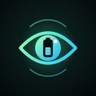

Cellsight Battery
Privacy Policy · Política de Privacidade · Alexandre Nântua
Effective date: October 12, 2026
In short: your battery data stays on your phone. We have no server and receive none of it. The only third party that receives data is Google, through the ads (AdMob) and purchases (Google Play).
Who we are
Cellsight Battery is an Android app developed by Alexandre Nântua, an independent developer (“we”). Contact: alexandrennr@gmail.com.
Data the app keeps on your phone
To show your battery health, the app saves the following only on your device:
- Charges: start and end time, start and end battery level, and the result of the health estimate.
- Readings taken while charging: time, battery level, charge counter, temperature, voltage and current.
- Settings: theme, alerts, monitoring on/off, battery capacity you typed, Pro status and charge cycles read from the phone.
This data is not personal information about you, is never sent to us, and we cannot see it. You can delete it at any time in Settings › Clear history, by clearing the app's storage in Android settings, or by uninstalling the app.
Android backup: if you have Google backup turned on, Android may include this app's data in your personal backup in your Google account, like it does for other apps. That backup is controlled by you and Google; we have no access to it.
Advertising (Google AdMob)
The free version shows a banner from Google AdMob. The Google Mobile Ads SDK may collect and share with Google: the advertising ID, approximate location derived from your IP address, interactions with ads, and diagnostic data (such as crashes and performance), for advertising, analytics and fraud prevention.
- In regions where the law requires it (such as the European Economic Area, the UK and Switzerland), the app asks for your consent through Google's consent form before requesting any ad, and an Ad privacy button in Settings lets you change your choice.
- You can reset or delete your advertising ID in Android settings (Google › Ads or Privacy › Ads).
- How Google uses this data: policies.google.com/technologies/ads and policies.google.com/privacy.
Battery data is never given to the ads SDK. The banner gives priority to our own apps (Tinho, ClientControl and Health Sched); those ads come from inside the app, collect nothing, and only open the Google Play page when tapped. To avoid advertising an app you already have, Cellsight Battery checks on the phone whether these three apps are installed. It cannot see any other app, and this information never leaves the device. Buying Cellsight Pro removes all ads.
Purchases (Google Play)
Cellsight Pro is sold through Google Play Billing. Google handles the payment; the app only receives whether the purchase is valid. We never see your card, name or email. See Google Payments Privacy Notice.
Optional activation over Wireless debugging
Some phones only reveal official battery health and cycle count to developer tools. If you choose to activate it, the app connects to your own phone through Android's Wireless debugging, using a pairing code you enter. It then:
- grants itself permission to read battery statistics;
- reads the battery report and, on some phones, the battery chip's cycle counter;
- turns Wireless debugging off again if it was off before.
This connection never leaves your phone. The key used for pairing is created on the device for this purpose only.
Permissions
| Permission | Why |
|---|---|
| Notifications | The notification shown while charges are being tracked, and the alerts you turn on (charge level, temperature). |
| Foreground service, wake lock | Keep reading the battery during a charge without gaps. |
| Start at boot | Resume tracking after the phone restarts, if you turned it on. |
| Internet | Ads, Google Play purchases, and the local Wireless debugging connection. |
| Local network (Android 17+) | Only during the optional activation above: find the Wireless debugging pairing window on this same phone. The app does not look for or connect to other devices. |
| Battery statistics | Only after the optional activation above; read official health on Android 14+. |
The app does not ask for location, contacts, photos, files, microphone, camera or any account.
Children
The app is not directed at children under 13, and we do not knowingly collect data from them.
Sharing and selling
We do not sell data and do not share it with anyone. The only data flows are the ones to Google described above.
The battery report image is created on your phone. The app does not send it anywhere: it only leaves the phone if you share it yourself, with the app you choose. The image shows the phone model, the Android version, the date and the battery numbers, and nothing else about you.
Your rights
Because we hold no data about you, there is nothing for us to access, correct or delete on our side; your battery data is deleted on the phone as described above. For data held by Google, use your Google account settings or the links above. Questions: alexandrennr@gmail.com.
Changes
If this policy changes, the new version will be published on this page with a new effective date.
Data de vigência: 12 de outubro de 2026
Resumo: os dados da sua bateria ficam no seu celular. Não temos servidor e não recebemos nada deles. O único terceiro que recebe dados é o Google, pelos anúncios (AdMob) e pelas compras (Google Play).
Quem somos
O Cellsight Battery é um app Android desenvolvido por Alexandre Nântua, desenvolvedor independente (“nós”). Contato: alexandrennr@gmail.com.
Dados que o app guarda no seu celular
Para mostrar a saúde da bateria, o app salva o seguinte apenas no seu aparelho:
- Cargas: horário de início e fim, nível da bateria no início e no fim e o resultado da estimativa de saúde.
- Leituras durante a carga: horário, nível da bateria, contador de carga, temperatura, tensão e corrente.
- Ajustes: tema, alertas, acompanhamento ligado ou desligado, capacidade da bateria digitada por você, status do Pro e ciclos lidos do celular.
Esses dados não são informações pessoais sobre você, nunca são enviados para nós e não temos como vê-los. Você pode apagá-los a qualquer momento em Ajustes › Limpar histórico, limpando o armazenamento do app nas configurações do Android ou desinstalando o app.
Backup do Android: se o backup do Google estiver ligado, o Android pode incluir os dados deste app no seu backup pessoal na sua conta Google, como faz com outros apps. Esse backup é controlado por você e pelo Google; não temos acesso a ele.
Anúncios (Google AdMob)
A versão gratuita mostra um banner do Google AdMob. O SDK de anúncios do Google pode coletar e compartilhar com o Google: o ID de publicidade, a localização aproximada obtida pelo endereço IP, interações com os anúncios e dados de diagnóstico (como travamentos e desempenho), para publicidade, análise e prevenção de fraude.
- Nas regiões onde a lei exige (como o Espaço Econômico Europeu, o Reino Unido e a Suíça), o app pede seu consentimento pelo formulário do Google antes de pedir qualquer anúncio, e o botão Privacidade dos anúncios em Ajustes permite mudar a escolha.
- Você pode redefinir ou excluir seu ID de publicidade nas configurações do Android (Google › Anúncios ou Privacidade › Anúncios).
- Como o Google usa esses dados: policies.google.com/technologies/ads e policies.google.com/privacy.
Os dados da bateria nunca são passados ao SDK de anúncios. O banner dá prioridade aos nossos próprios apps (Tinho, ClientControl e Health Sched); esses anúncios vêm de dentro do app, não coletam nada e só abrem a página do Google Play quando tocados. Para não anunciar um app que você já tem, o Cellsight Battery verifica no celular se esses três apps estão instalados. Ele não enxerga nenhum outro app, e essa informação nunca sai do aparelho. Comprar o Cellsight Pro remove todos os anúncios.
Compras (Google Play)
O Cellsight Pro é vendido pelo faturamento do Google Play. O Google cuida do pagamento; o app só recebe se a compra é válida. Nunca vemos seu cartão, nome ou e-mail. Veja o Aviso de Privacidade do Google Payments.
Ativação opcional pela Depuração sem fio
Alguns celulares só revelam a saúde oficial e os ciclos da bateria para ferramentas de desenvolvedor. Se você escolher ativar, o app se conecta ao seu próprio celular pela Depuração sem fio do Android, com um código de pareamento que você digita. Então ele:
- dá a si mesmo a permissão de ler as estatísticas da bateria;
- lê o relatório da bateria e, em alguns celulares, o contador de ciclos do chip da bateria;
- desliga de novo a Depuração sem fio, se ela estava desligada antes.
Essa conexão nunca sai do seu celular. A chave usada no pareamento é criada no aparelho só para isso.
Permissões
| Permissão | Para quê |
|---|---|
| Notificações | A notificação exibida enquanto as cargas são acompanhadas e os alertas que você ligar (nível de carga, temperatura). |
| Serviço em primeiro plano, manter ativo | Continuar lendo a bateria durante a carga, sem buracos. |
| Iniciar com o aparelho | Voltar a acompanhar depois que o celular reinicia, se você ligou isso. |
| Internet | Anúncios, compras do Google Play e a conexão local da Depuração sem fio. |
| Rede local (Android 17+) | Só durante a ativação opcional acima: achar a janela de pareamento da Depuração sem fio neste mesmo celular. O app não procura nem se conecta a outros aparelhos. |
| Estatísticas da bateria | Só depois da ativação opcional acima; lê a saúde oficial no Android 14+. |
O app não pede localização, contatos, fotos, arquivos, microfone, câmera nem nenhuma conta.
Crianças
O app não é direcionado a menores de 13 anos, e não coletamos dados deles intencionalmente.
Compartilhamento e venda
Não vendemos dados e não os compartilhamos com ninguém. Os únicos fluxos de dados são os para o Google descritos acima.
A imagem do relatório da bateria é criada no seu celular. O app não a envia para lugar nenhum: ela só sai do celular se você mesmo compartilhar, com o app que escolher. A imagem mostra o modelo do celular, a versão do Android, a data e os números da bateria, e nada mais sobre você.
Seus direitos (LGPD e outras leis)
Como não guardamos nenhum dado sobre você, não há o que acessar, corrigir ou apagar do nosso lado; os dados da bateria são apagados no celular como descrito acima. Para dados mantidos pelo Google, use as configurações da sua conta Google ou os links acima. Dúvidas: alexandrennr@gmail.com.
Mudanças
Se esta política mudar, a nova versão será publicada nesta página com uma nova data de vigência.